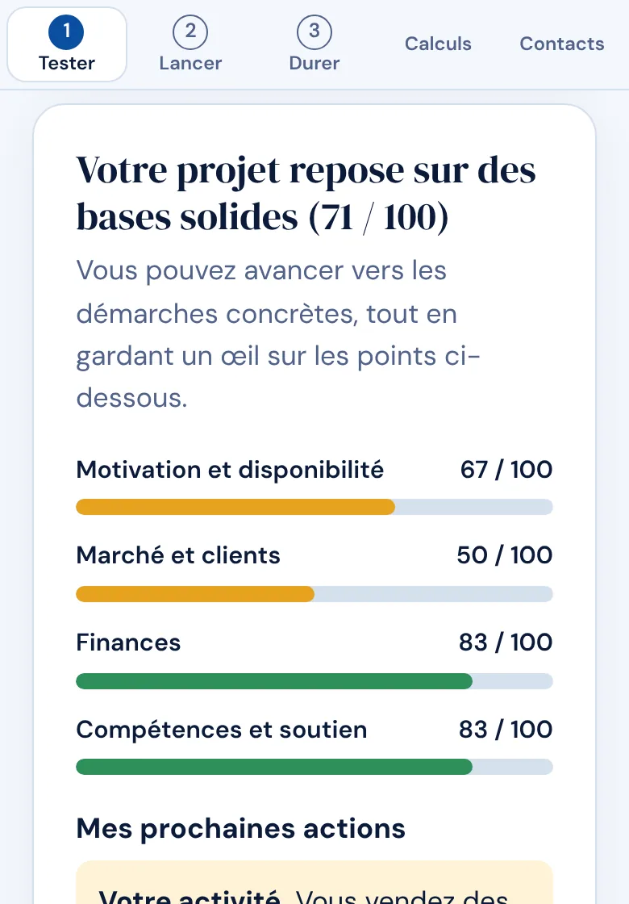
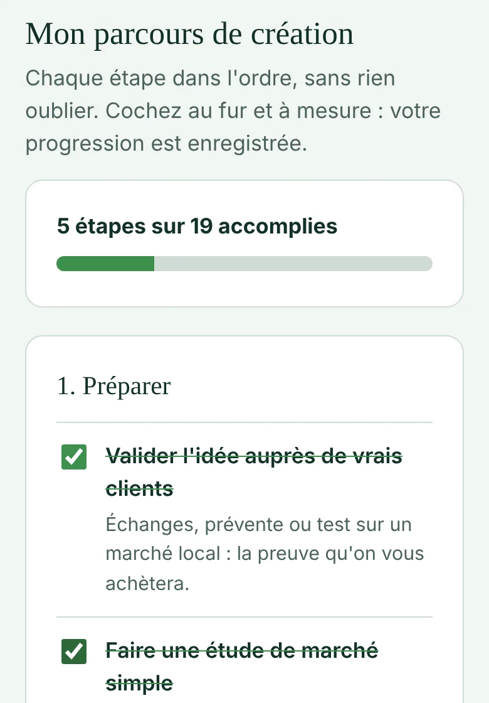
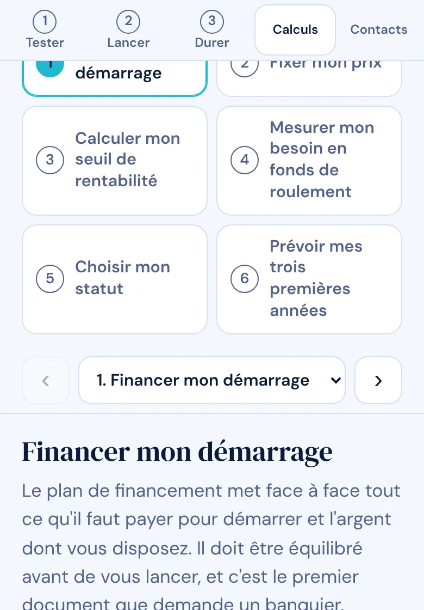

Taux 2026 vérifiésCotisations de la micro-entreprise et seuils contrôlés en septembre 2026.
Gratuit, sans inscriptionNi compte ni adresse e-mail. Vos réponses restent sur votre appareil.
Métropole et outre-merFrance métropolitaine, Guadeloupe, Martinique, La Réunion, Guyane et Mayotte.
Trois temps pour entreprendre sereinement
Tester mon projet
Un bilan de faisabilité sur quatre piliers : motivation et disponibilité, marché et clients, finances, compétences et soutien. Les questions s'adaptent à votre activité et chacune est expliquée en mots simples.
Me lancer
Un parcours en trois étapes (Préparer, Créer, Démarrer) avec les démarches dans l'ordre, complétées par celles de votre type d'activité. Vous cochez au fur et à mesure.
Piloter mon activité
Suivi du chiffre d'affaires mois par mois face à votre objectif, tableau de bord mensuel, échéances à ne pas manquer et signaux d'alerte calculés d'après vos chiffres.



Six outils de calcul qui se parlent
Les chiffres saisis dans un outil alimentent les autres. Seuls les outils qui vous concernent sont affichés.
- Financer mon démarragePlan de financement et remboursement des emprunts.
- Fixer mon prixDu prix de revient au prix de vente minimum. Lire le guide
- Calculer mon seuil de rentabilitéCombien vendre, et à quelle date l'activité devient rentable. Lire le guide
- Mesurer mon besoin en fonds de roulementL'argent à avancer entre vos achats et l'encaissement. Lire le guide
- Choisir mon statutComparaison des statuts à partir de vos propres chiffres.
- Prévoir mes trois premières annéesCompte de résultat et trésorerie prévisionnels.
Guides pour comprendre avant de calculer
Trois guides courts, avec des exemples chiffrés.
- Prix de revient et prix de vente
La formule, l'exemple d'un prestataire de services et celui d'une boutique en ligne.
- Seuil de rentabilité
Combien vendre pour ne pas perdre d'argent, cotisations de la micro-entreprise comprises.
- Besoin en fonds de roulement
Pourquoi une entreprise rentable peut manquer d'argent, et comment l'éviter.
Ce que Pa a Pa fait, et ce qu'il ne fait pas
Pa a Pa donne une première estimation honnête de votre projet, avec des taux et seuils 2026 vérifiés en septembre 2026. Il oriente ensuite vers les organismes d'accompagnement : CCI, réseaux d'aide à la création, experts-comptables.
Il ne remplace pas leurs conseils : il prépare l'entretien. Les montants sont des estimations d'orientation.
L'application est gratuite. Elle peut afficher des liens partenaires, toujours signalés comme tels, sans coût supplémentaire pour vous. Confidentialité
Questions fréquentes
Que signifie « Pa a Pa » ?
« Pa a pa » signifie « pas à pas » en créole antillais et haïtien. C'est aussi le nom de cet outil gratuit : Pa a Pa aide les futurs créateurs d'entreprise à avancer pas à pas, du test de faisabilité au lancement, sans inscription.
Pa a Pa est-il vraiment gratuit ?
Oui. L'application et les guides sont gratuits et sans inscription. Pa a Pa peut afficher des liens partenaires, toujours signalés comme tels, sans coût supplémentaire pour vous.
Faut-il créer un compte ?
Non. L'application française ne demande ni compte, ni nom, ni adresse e-mail. Vos réponses et vos chiffres restent enregistrés sur votre appareil, dans la mémoire locale du navigateur, et ne sont pas envoyés à un serveur.
À qui s'adresse Pa a Pa ?
À toute personne qui pense créer une entreprise, quel que soit son secteur, et en particulier aux débutants : chaque question et chaque calcul sont expliqués en mots simples. L'application propose la France métropolitaine, la Guadeloupe, la Martinique, La Réunion, la Guyane et Mayotte.
Que fait Pa a Pa que je ne peux pas faire avec un tableur ?
Il pose des questions adaptées à votre type d'activité, relie les calculs entre eux (les chiffres saisis dans un outil alimentent les autres) et n'affiche que ce qui vous concerne : le besoin en fonds de roulement n'apparaît pas pour une activité payée au comptant, par exemple.
Peut-on installer l'application sur un téléphone ou un ordinateur ?
Oui. Pa a Pa s'installe comme une application depuis le navigateur et fonctionne ensuite sans connexion. Sur iPhone, l'installation passe par le menu Partager de Safari.
Les résultats remplacent-ils un expert-comptable ?
Non. Les montants sont des estimations d'orientation, calculées avec les taux 2026 de la micro-entreprise et des paramètres simplifiés pour les autres statuts. Avant de vous engager, faites-les confirmer par un expert-comptable ou un conseiller en création.
Pa a Pa pour toute la Caraïbe
Pa a Pa existe aussi pour 29 pays et territoires de la Caraïbe, en français, en anglais, en espagnol et en néerlandais : un test gratuit pour savoir si un projet d'entreprise peut payer les factures de son créateur, avec les impôts, les cotisations et les démarches de chaque pays.
Guides par pays
Jamaica · Trinidad and Tobago · Guyana · Barbados · The Bahamas · Belize · Saint Lucia · Dominica · Grenada · Saint Vincent and the Grenadines · Antigua and Barbuda · Saint Kitts and Nevis · Cayman Islands · British Virgin Islands · Turks and Caicos Islands · Anguilla · Montserrat · Aruba · Curaçao · Suriname · Haiti · Bonaire · Sint Eustatius · Saba · Sint Maarten · US Virgin Islands · República Dominicana · Puerto Rico · Cuba · Haïti · Aruba (nl) · Curaçao (nl) · Suriname (nl) · Bonaire (nl) · Sint Eustatius (nl) · Saba (nl) · Sint Maarten (nl).
Prêt à tester votre projet ?
Quelques minutes suffisent pour un premier bilan.
Ouvrir l'application gratuite